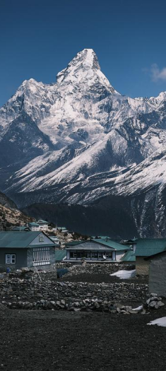

Контакты:
+375(44)747-11-71
+375(29)293-23-23
Наши адреса:
ул.Сырокомли д.28
просп.Победетелей д.17
Почти настоящий альпенизм Альпы - очевидно считаются родиной такого вида экстремального отдыха - как альпенизм. этот подвид спортивного времяприровождения давно стал популярен во всём мире, а его основные тезисы используют далеко не только в альпах. Данный тур предлагает вам своими глазами увидеть невероятные красоты. Этот маршрут не предлагает сложных восхождений с использованием специального снаряжения, однако местами подъём крайне резкий и требует подготовки.
Ваш Первый самый серьёзный поход Самы простой из самых сложных - описание данного тура в двух словах. Конечная точка любого альпениста, который не просто горит своим увлечением, а живёт им - Эверест, вершина мира. Данный наш тур позволит вам открыть для себя Непал и Гималаи в целом. Данный поход считается одним из простейших, с которым сможет справится человек, который является новичком среди профессионалов, и наши инструкторы вам в этом помогут.
1
2
3
...